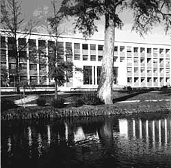

This guide is intended to make the first few weeks in Bordeaux a little easier. There are lots of little things that you'll need to do but won't know how; you're expected to know already. Hopefully, after having had a look at this guide, you will. Also this should give you an idea of what there is to do in Bordeaux .
|  |
Anything written in italics is probably in French or a French name and so can be safely ignored or mispronounced.
There are bound to be things here that are out of date by next year, in particular anything that involves a number, whereas other things will have been wrong in the first place. However, misinformation is something that you'll get used to.
January 1995
{% include bordeaux_guide_footer.html %}